Cafe Au GAZE
Sunday 4th August
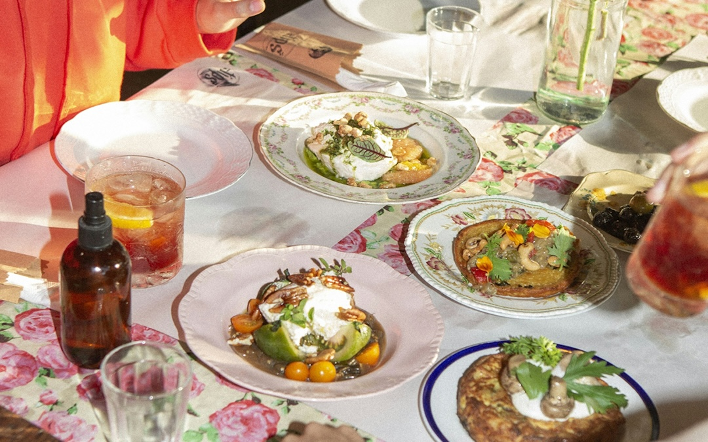Location TBC | 11:30
Join us on Saturday, Sunday and Monday mornings of the festival for Café au GAZE, where we will invite attending artists, filmmakers and industry professionals of the festival to talk about their practice and to share behind-the-scenes stories from their work. Each morning will be hosted by a local LGBTQIA filmmaker and Festival Director Greg Thorpe. This series is not to be missed by the artists, the film lovers and those of us who love to hear the gossip
Milestones Shorts
Sunday 4th August 2024
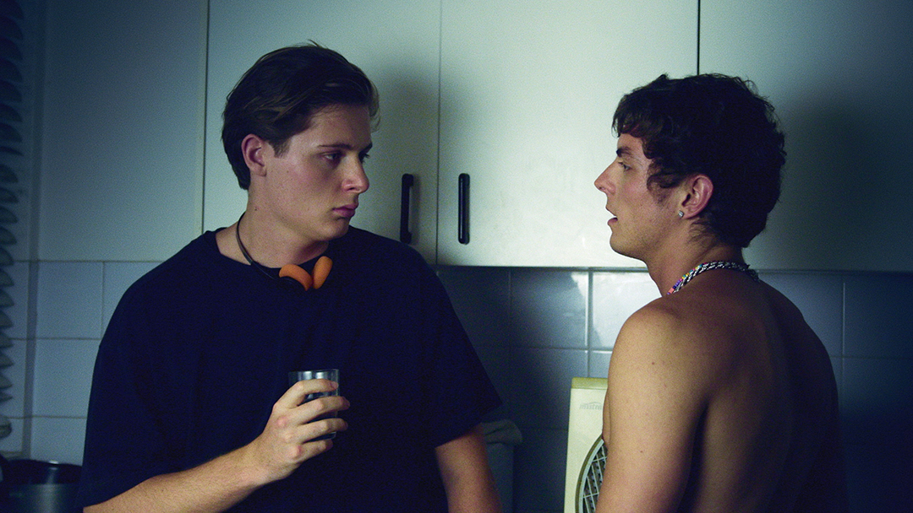
Light House Cinema | Screen 2 | 13:30
1hr 18m
Gay, bi, queer, and questioning men from all different walks of life recall milestones in their lives - or reach
towards new ones. Dating as an autistic guy, remembering old loves, or taking back their power, these men are all finding their way.
Curtain Call
Malynda Hale/ USA/ 2023/ 16m
Luke runs into old flame, Eric, from a previous life of performing in musical theatre. Comparing how they have both moved on, Luke reveals
Eric was his first and only same-sex relationship.
Written by: John Volk
Produced by: Danielle Beckmann
First Time
Daniel Kahana/ USA/ 2022/ 18m
An intern heads to dinner with his supervisor on the last day of his internship, but things take a turn when he is pressured into a sexual
encounter. Drawing on the director's personal experience, the film marks the bold decision when a survivor takes charge of their own narrative.
Produced by: Daniel Kahana, Rebecca Shapiro
Written by:Daniel Kahana
Neuromance
Brodie Pyke/ Australia/ 2023/ 13m
Nate is twenty-three years old, living with autism and discovering the horrors of the gay dating scene in Sydney. After his well-meaning
best friends sign him up to Grindr, can Nate overcome his fear of pretty much everything to find the man of his dreams?
Written and Produced by: Kyle Goldfinch
Nothing Special
Mikko Makela/ UK/ 2023/ 14m
An open relationship makes space for an encounter that is more intense than expected when a filmmaker and a moviegoer's ideas of cinematic
romance are put to the test during a one-night stand.
Written by: Mikko Makela
Produced by: James Watson
Bolero
Nans Laborde-Jourdàa/ France/ 2023/ 17m
While visiting his hometown, Fran experiences memories of a confusing encounter from his youth, triggering a strange response as the
jerky rhythm of Bolero leads both Fran and soon the whole village to a joyfully chaotic climax of memory and desire.
Written by: Nans Laborde-Jourdàa
Produced by: Margaux Lorier
Old Lesbians Shorts
Sunday 4th August 2024

Light House Cinema | Screen 3 | 13:30
1hr 8m
Old Lesbians are celebrated at GAZE through our screening of Lesvia and this fantastic double-bill of
longer lesbian shorts. Recording the lived experiences of cherished dykes of the past is the common theme
from these two touching portraits that will have you laughing and crying by turns.
Presented in proud partnership with our friends at Bealtaine Festival, an Age and Opportunity arts initiative
celebrating the arts and creativity as we age.
For more details visit bealtaine.ie.
Love Letters
Greta Schiller/ USA/ 2024/ 39m
Catharine and Liz, two lesbians in their 80s, recall their enduring relationship through the correspondence
they have kept since their first meeting in New York in the 1970s. As an out lesbian with four children, Liz
was threatened with legal separation from her family, but won a landmark case that recognized lesbians as mothers,
partners, and valid valued members of society. The film won Best Documentary Short at Queens World Film Festival.
Written by: Greta Schiller
Produced by: Andrea Weiss
Old Lesbians
Meghan McDonagh/ USA/ 2023/ 29m
'It's like taking back the word “lesbian”. We take back the word “old”. We honor it. We revel in it...' Armed with
curiosity, a love of her community, and a recording device, Arden Eversmeyer journeyed across America gathering over
eight hundred life stories of old lesbians to create the Old Lesbian Oral Herstory Project. Filmmaker Meghan McDonough
honors that epic undertaking in this emotional exploration of the voices uncovered, many of whom are no longer with us
but will live forever thanks to Arden's work, and this precious film.
Produced by: Stevie Borrello
New Irish Shorts
Access Screening
Sunday 4th August 2024
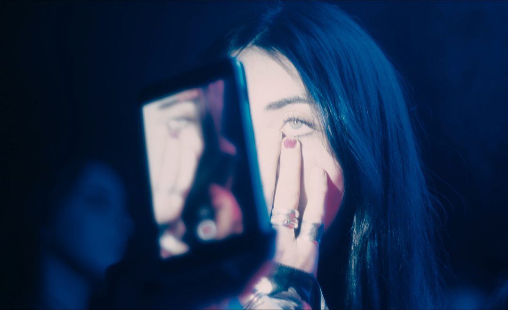
Light House Cinema | Screen 4 | 13:45
1hr 49m + Q&A
Irish shorts are the beating heart of GAZE, and as always we have spread them
throughout our programme in various shorts blocks and pre-feature slots. The six
films screened as part of New Irish Shorts represent the breadth of Ireland's
film-making talent, concerning lesbian desire, parenthood, drag, HIV, and Gaeilge as
a secret sapphic love-language. We are honoured to welcome some of the makers with
us for a post-show conversation, so please join us. This year, we are excited to
introduce a second screening of Irish Shorts with access elements.
This Is Not An Attack On Your Parenting
Rory Fleck Byrne/ Ireland/ 2024/ 19m
A mother and her gay adult son, who has recently suffered a breakdown, explore their
opposing views on parenting.
Written by: Rory Fleck Byrne
Produced by: Killian Casey, Philip Emo
Homofónia
Luke K. Murphy/ Ireland/ 2023/ 11m
As their Debs application deadline approaches, a closeted couple sort their domestic issues as
Gaeilge, to prevent their classmates from knowing they're an item. However, translation issues
leave their relationship in jeopardy.
Written by: Alana Daly Mulligan, Luke K. Murphy
Produced by: Alana Daly Mulligan
Concerned
Hazel McGuire, Jenny Roche/ Ireland/ 2024/ 13m
Concerned ponders the gap between public 'concern' around gender, identity, child andparent
roles, and the private reality of those who are actually concerned; gender nonconforming people
and their families - all told through the filmmakers' own personal daughter/mother relationship.
Written by: Hazel McGuire, Jenny Roche
Produced by: Hazel McGuire, Jenny Roche
Terratoma
Liadán Roche/ Ireland/ 2024/ 24m
A trans woman tries to recreate a traumatic relationship for a film project.
Written by: Liadán Roche
Produced by: Molly Donnery
Spins, Splits, Stories
Alan Power/ Ireland/ 2024/ 5m
Leon Pinto, a singer and pole dancer from Australia, shares his personal
story of growing up in Australia and Ireland, culminating in a captivating
performance at The George. A film that invites you to take a moment and revel
in his raw and heartfelt recollection.
Written by: Alan Power
Dirty Talk
Eva Wyse/ Ireland/ 2024/ 15m
On the quest for intimacy in the middle of a global pandemic, Tar and Anna
meet for the first time in the hopes of having a socially distanced hook
up. No touching, just (attempted) dirty talk.
Written by: Madi O'Carroll
Produced by: Danilo Zambrano
Pregnant with a Drag Queen
Colin Brady/ Ireland/ 2024/ 22m
Pregnant with a Drag Queen unfolds the journey of how Enda McGrattan,
growing up as a queer person in 1990s Dublin, unlocked something within
themselves by giving birth to the vibrant drag persona Veda. Sharing their
transformative experiences on a live TV chat show, Enda contends with a sceptical
host before the show is suddenly derailed by the most beautiful woman in the world...
in their price range.
Written by: Colin Brady
Produced by: Steve Sheehy
India's First Best Trans Model Agency
Sunday 4th August
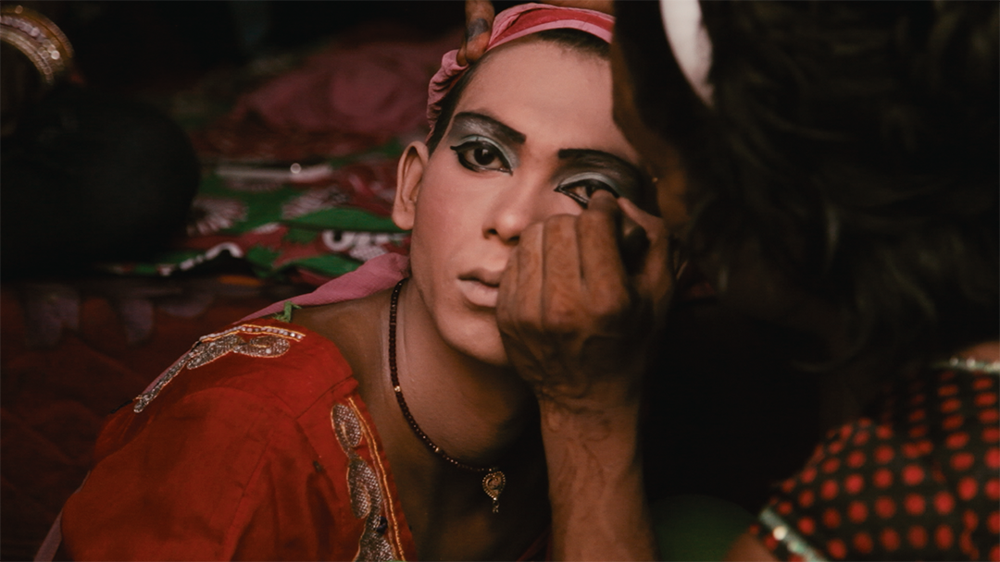
Irish Film Institute | Cinema 1 | 13:45
Dir. Ila Mehrotra / India / 2023 / 1hr 28m
The hijras in India are the oldest ethnic transgender community in the world, traditionally considered to be a third gender,
alternately feared and respected, and attributed with powers for both good luck and bad. Rudrani Chettri is a hijra activist with
a mission - to elevate her fellow hijra, provide them with opportunities above their usual economic hardship, and make them visible
on their own terms.
Spanning seven years, Chettri established India's first transgender modelling agency, facing mockery, indifference, and joy along the
way. Shocking stories of survival sex work and violence are paired with intense community resilience and humour.
The film also offers a nuanced and timely examination of what happens when hijra tradition meets the contemporary trans rights
movement. Not to be missed.
Producer: Edward Dallal
Pre Feature Short: Marigold
Abhinav Dubey / India / 2022 / 12m
As the summer holidays approach, Geeta decides to lie about her last day at work to meet Shashi. Desires and sexuality
the two women long to share gradually unfolds, till the last boat arrives.
Writers: Mangeshi Dronkar, Abhinav Dubey
Presented in proud partnership with Queer Spectrum Film Festival.
Taboo Shorts
Sunday 4th August 2024
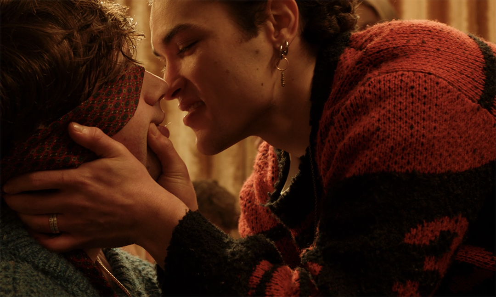
Irish Film Institute | Cinema 2 | 15:20
1hr 43m
From maligned pleasure seekers to disruptive activists, this programme dives deep into an array of subjects
that remain risqué within the queer community today. Risky sex takes centre stage in shorts on chemsex and cruising;
films face facts with direct action protest and sex worker activism; and intimate relationships are laid bare as an open
relationship hits its limits and an illicit coach-athlete affair makes dangerous power plays. With nuance, intimacy and a
dose of humour, these seven short films lay bare our blindspots, reminding us who is left out when we only stay in the realms
of polite conversation.
Presented in proud partnership with the Gay Health Network. There will be a post-screening discussion.
F**KED
Sara Harrak/ UK/ 2023/ 6min
Jess and Dani are thriving in an open lesbian relationship replete with kink and sex parties— until Dani considers sleeping
with men, and suddenly 'open' has its limits.
Written by: Meg Salter
Produced by: Emma Hammond
AMŒBA
Ian Fallon/ Ireland/ 2023/ 16min
Brain-eating parasites, homoerotic violence and GAA lads come to a head after a young queer man
becomes convinced his unrequited crush kissed him while drunk.
Written by: Ian Fallon
Produced by: Thomas Purdy
Beautiful Trouble
Christopher T. McGill/ UK/ 2024/ 17min
Queer Jewish street activist Dan Glass reflects on years of direct action protest and art activism, including
ACT UP London, queer self-defence with the Bender Defenders, and the iconic Baby Trump float.
Produced by: Siobhan Fahey
Apnea
Natalia Bermúdez/ Mexico/ 2024/ 20min
An increasingly tense affair between athlete Renata and her swimming coach Liliana pushes both women to
reckon with consent, desire, and power.
Written by: Natalia Bermúdez, Danae Reynaud
Produced by: Franco Bautista, Male Lara
CHEMSEX
Daniel Porto/ Brazil/ 2024/ 7min
A group of men at a chemsex party entertain casual and intimate conversations on sex, drugs, and loneliness,
searching for deeper connections across the ephemerality of chemical pleasure.
Written by: Daniel Porto
Produced by: Alexandre Lino
Chica
Juan Yactayo Sono/ Peru/ 2024/ 20min
Katya, a trans sex worker, yearns to improve the conditions for her community but fears being outed as a sex worker
to her mother until a wave of police violence pushes Katya's silence to its breaking point.
Written and Produced by: Juan Yactayo Sono, Diego Díaz Mecca
Never Kill a Femboy on the First Date
Oonagh Kearney/ Ireland/ 2024/ 17min
An Asian Irish femboy's bold plans to seduce a closeted GAA player take a risky turn when three lads watch them having sex from afar.
Written by: Lee-Loi Chieng
Produced by: Aoibhín Murphy
Lesvia
Sunday 4th August
Light House Cinema | Screen 2 | 16:00
Dir. Tzeli Hadjidimitriou / Greece / 2024 / 1hr 17m
Filmmaker Tzeli Hadjidimitriou is an out and proud double Lesbian - that is, a lesbian from Lesbos. Her documentary
Lesvia chronicles forty years of life in the small farming village of Eressos on the island of Lesbos, where lesbian
women from around the world have been gathering together since the late 1970s. Past and present lesbians speak about
the changing nature of life on the island, from both the locals' and newcomers' point of view.
A thrilling herstory of the lesbian community emerges, where daring women leave straight society behind, but run into
new challenges along the way. With incredible archival material, a history of Sappho and her place in the contemporary
Greek imagination, and dozens of charismatic interviewees with divine women make this a must-see for the modern lesbian
and Sapphic sis. Come out to the island...
Writer: Tzeli Hadjidimitriou
Producers: Rea Apostolides, Tzeli Hadjidimitriou
Pre Feature Short: Stella
Yvonne Lawlor / UK / 2023 / 13m
Locked outside at 3am, this isn't the wild one-night stand Georgie and Alisha had imagined when leaving the club.
Bursting with flirt, chaos, and MDMA, the girls desperately try not to let their high die and the mayhem turn to regret.
Writer: Yvonne Lawlor
Producers: Yvonne Lawlor, Charlie MacGechan, Kristin Tarry
Iris Loves Shorts
Presented By Iris Prize
Sunday 4th August 2024
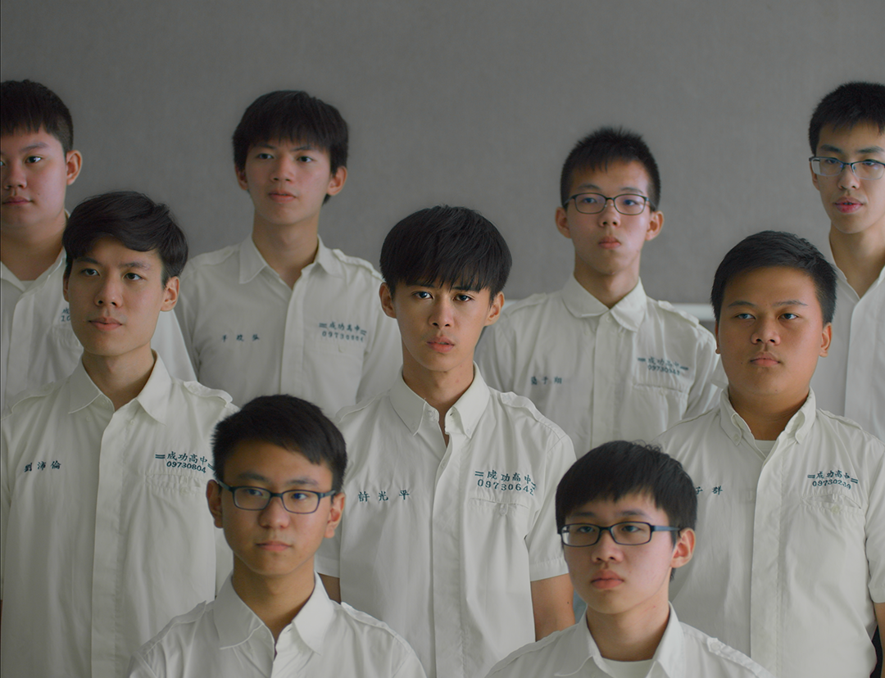
Light House Cinema | Screen 4 | 16:00
1hr 29m
Established in 2006, the Iris Prize is a film and media organisation committed to increasing audiences for LGBTQ+ stories.
Hosting an annual festival in October in Cardiff, it boasts the largest short film prize in the world, a coveted £30,000 award.
The following programme includes some of the best films that were honoured and celebrated at the 2023 Iris Prize LGBTQ+ Film
Festival. For more details visit irisprize.org.
Scaring Women at Night
Karimah Zakia Issa/ Canada/ 2022/ 11m
A Black transgender man, walking alone in the dark, becomes anxious about being perceived as a threat by Ella, a woman also
walking alone nearby. As these two strangers, both scared on their late-night walks home, attempt to avoid each other, their worlds
unexpectedly collide at an intersection, forcing them to question who they fear and why.
Written by: Ace Clamber, Karimah Zakia Issa
Produced by: Lindsay Blair Goeldner, Rosalind Goodwin
Bubbling
Che-ming Chang/ Taiwan/ 2023/ 23m
Guang has difficulty focusing during school choir. He's distracted by something more enticing than singing. When a charismatic
new student arrives, Guang's curiosity and sexual desire is taken to a new level.
Written by: Che-ming Chang
Produced by: Hsin-wu Lin
Fruits of the Spirit
Georgia Day/ Wales, UK/ 2024
In the international premiere of this community film, Maddy and Carys are in the worship band of their evangelical church.
They're also in a relationship with each other. What could possibly go wrong?
Written and Produced by: Georgia Day, Holly Russell-Allison, Helen Capelin, Berwyn Rowlands
Ted & Noel
Julia Alcamo/ UK/ 2023/ 25m
Winner of the Iris Prize Co-op Audience award 2023, Ted and Noel follows a grieving LGBTQ+ activist trying to find the strength for one last campaign.
Produced by: Dan Hodgson, Mary Pattison
Realness with a Twist
Cass Virdee/ UK/ 2023/ 12m
Winner of the Iris Prize Youth Jury Award 2023, this dramatic short sees a talented footballer forced to battle between
his secret passion for voguing and the fear of his team-mate's disapproval.
Written by: David J. Giles, Cass Virdee
Produced by: David J. Giles, Maria Salcher
Life is Excellent
Feature + In Conversation
Sunday 4th August
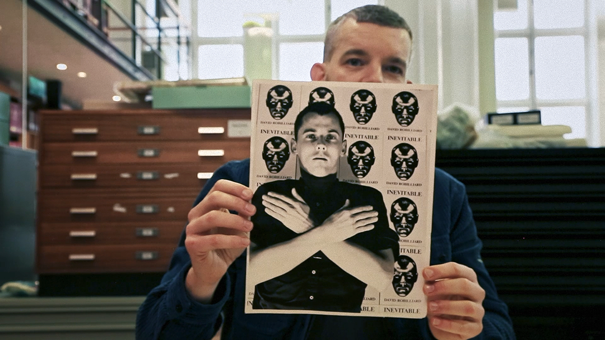
Irish Film Institute | Cinema 1 | 16:00
Dir. Joe Ingham / UK / 2023 / 49m
David Robilliard was a talented British artist who died in 1988, aged just 36 years old, one of the many young gay men of his generation lost to AIDS. In this emotional documentary, the actor and contemporary art devotee Russell Tovey embarks on a quest to bring the life and work of Robilliard back to its rightful prominence.
The result is Life is Excellent, a film that gathers together the artist's close friends, collaborators, and colleagues to remember and celebrate a remarkable talent. Through their memories and Tovey's devotion to Robilliard's work, we build a picture of a young dynamic artist full of courage and wit whose legacy deserves to shine.
There will be a post screening conversation featuring Russell Tovey, producer Susie Hall, and director Joe Ingham and this year’s Vanguard Award winner, the director of All Of Us Strangers, Andrew Haigh.
Producers: Susie Hall, Joe Ingham, Russell Tovey
All of Us Strangers
Feature + In Conversation
Sunday 4th August
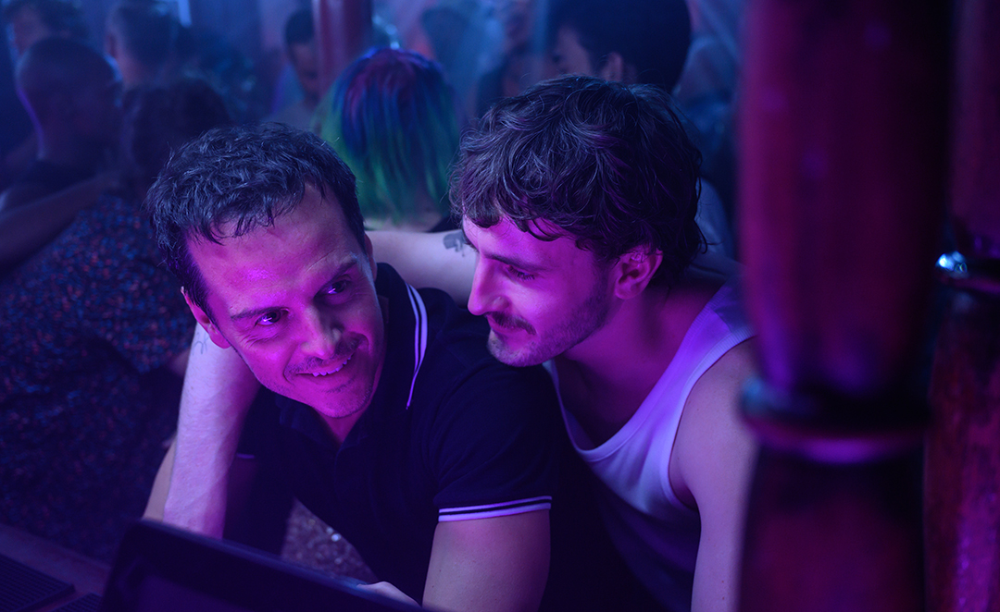
Irish Film Institute | Cinema 1 | 18:00
Dir. Andrew Haigh / UK / 2023 / 1hr 45m
This haunting tale of urban alienation, childhood reckoning, and regret brought together two of Ireland's finest actors in
performances that broke hearts and re-energized our appetite for cinema at a grand yet human scale. We are so excited to
return All Of Us Strangers to the big screen at the Irish Film Institute and to welcome Andrew Haigh himself in person, who
will be in conversation following the screening with his friend and artistic collaborator, Russell Tovey.
The conversation will be followed by an audience question and answer session where we encourage fans and budding filmmakers
to bring along your curiosity and make the most of this masterclass opportunity to hear from one of our finest voices in film.
In addition, we are so happy to announce that Andrew will be the recipient of this year's GAZE Vanguard Award in recognition
of his ground-breaking work in queer storytelling in film and television, and his contribution to the field at large.
There will be a post-screening conversation with Andrew Haigh and Russell Tovey.
Writers: Andrew Haigh, Taichi Yamada
Producers: Graham Broadbent, Pete Czernin, Sarah Harvey
Darklands: Are you ready to go deep?
Sunday 4th August
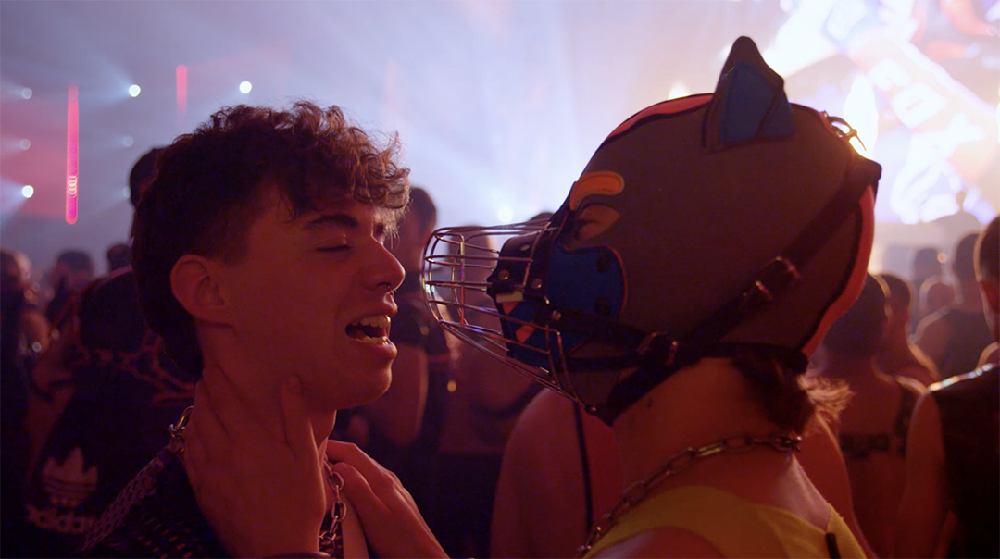
Irish Film Institute | Cinema 2 | 18:15
Dir. Roland Javornik / Belgium / 2023 / 1hr 24m
Roland Javornik's documentary Darklands unveils the tantalizing secrets of the renowned queer kink festival.
Behind the closed doors of Antwerp's awe-inspiring Waagnatie, the spectacular fetish event brings around eight-thousand
international visitors ready to explore their sexual imaginations and find their limits.
Darklands shows us the vision of its mastermind orchestrator Jeroen, alongside his straight sister Nathalie, who form an
unlikely but effective duo in bringing this sex-positive extravaganza to life each year. The film doesn't shy away from
critical topics such as consent, sexual identity, and the range of fetish tastes. Experience the birth and evolution of
this groundbreaking festival, intertwined with stories of its vibrant international characters, unfolding over a three-year
journey full of ups and downs.
Presented in proud partnership with the Leathermen of Ireland with a social event after the screening, all welcome.
There will be a post screening Q&A with Roland Javornik.
Writer: Sanne This
Producer: Jeroen Van Lievenogen
Pre Feature Short: Krush the Wrestler
Alex Megaro / USA / 2023 / 14m
Exploring the innate intimacy of submission wrestling, a lifelong wrestler turns his talents into an on-demand fetish video service.
Producer: Ian Bell
AXÉ Shorts
Honouring Black Queer Artistry
Sunday 4th August 2024
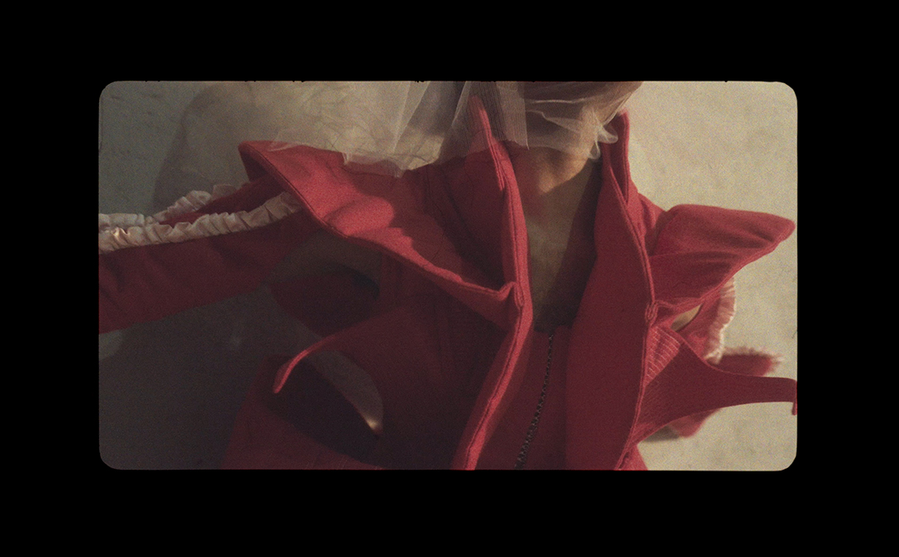
Light House Cinema | Screen 1 | 20:30
1hr 22m
Through their craft, Black Queer Artists have crafted a mosaic of diverse perspectives, stories,
and modes of expression, replaying, archiving, and validating not only their existence but all that
can be found beauty in it. This event aims to pay tribute to their presence and perseverance, to revel
in the power of queer black creativity. AXÉ will include live performances from musician David McAlmont
and dancer David J. Amado.
Permissible Beauty
Mark Thomas/ UK/ 2023/ 23m
Exploring the evolution of beauty standards in British history, this film delves into why certain forms of
beauty have been privileged over others. With a focus on Black Queer visibility, it offers fresh perspectives
through the stories of six Black Queer Britons, offering up a new chapter of British beauty for the 21st century.
Written by: David McAlmont
Produced by: Richard P. Sandell
True Colors
David J. Amado/ Portugal/ 2023/ 6m
Examining queer Black men's relationship to traditional masculinity and how societal expectations pressure them
to conform and silence their true selves. Through four acts of fashion, each act symbolises a stage from
repression to bold authenticity.
Written by: David J. Amado, Igor Silva, Felicia Hunter
Produced by: Amelia Carter
The Archive: Queer Nigerians
Simisolaoluwa Akande/ UK/ 2023/ 25m
With Nigerian queer history erased from the national narrative of Nigeria, queer Nigerians in the UK
gather to tell their stories, documenting their experiences so they can never be erased again.
Written by: Simisolaoluwa Akande
Produced by: Maxine Gordon
Obsidian Black
Osaro Azams/ Ireland/ 2022/ 21m
Osaro's sonorous vocals turn into choir-like prayers as they erupt softly from where they lie in her
stomach. The hypnotic energy of the music matches with the stunning visuals of yellow gorse fields atop
Killiney Hill where certain folkloric characters lay dormant.
Produced by: Osaro Azams
Drifter
Sunday 4th August
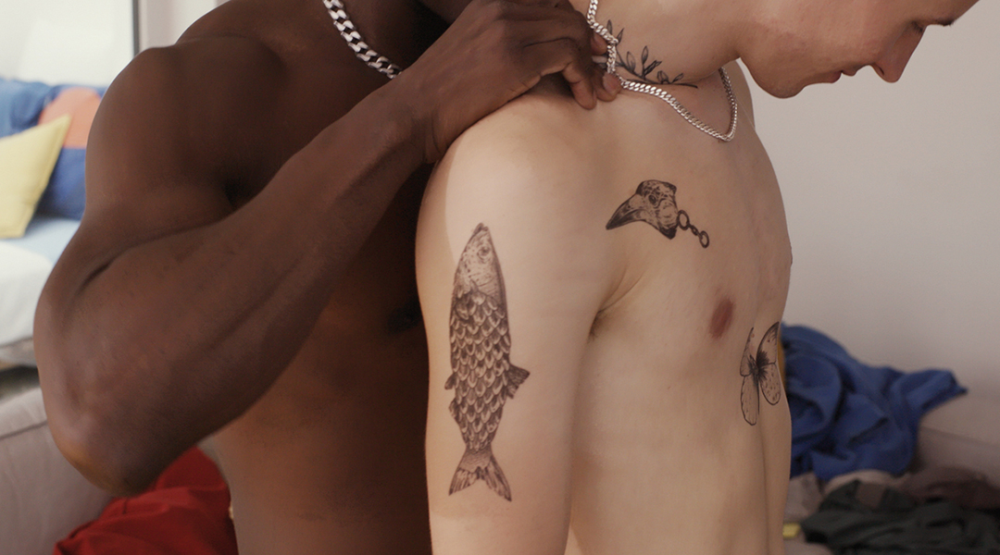
Light House Cinema | Screen 2 | 21:00
Dir. Hannes Hirsch / Germany / 2023 / 1hr 19m
Winner of the 2024 German Film Critics Award, Drifter tells the story of a young gay man, Moritz (Lorenz Hotchhuth), who relocates to Berlin to be with his boyfriend. When their relationship falls apart, Moritz decides to remain in Berlin, gradually allowing all of the city’s compulsions and temptations to play out on his body and mind.
The various strange and extreme desires of the people he meets fascinate him, as does his own growing appetite for experience. Fleeting connections come and go, Moritz’s tattoos gradually multiply, but ultimately the young drifter remains lonely and lustful. Hotchhuth gives a wonderfully vulnerable and understated performance as Moritz, but it’s the dark sticky side of the city that is the real star of the film – tempting, dangerous, and never ever still.
This film screening is proudly supported by the Goethe-Institute Ireland.
Writers: Hannes Hirsch, River Matzke
Producers: Hannes Hirsch, Diemo Kemmesies
Pre Feature Short: Castling
Federico Yang / Italy / 2024 / 10m
A young man, disappointed in human relations, moves into a tower in the middle of nowhere. However, the pleasant solitude gives in to dreams of intimacy, but perhaps for the last time.
Writer/Producer: Federico Yang